Week 13:
Project development
In this week, I decided to try and store the data in the firebase realtime database into Google Sheets, which will be used to plot real time data.
Read through the Google Sheets API to try and write code to get and append data from the
realtime database into Google Sheets. Currently, the database is not populated and therefore we will need to populate the
firebase database with more data such that we can make meaningful visualisations.
 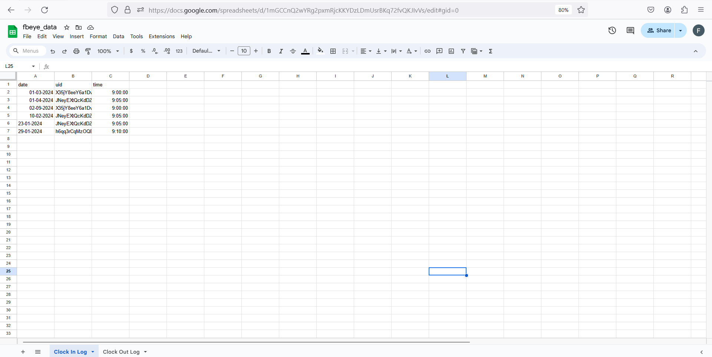
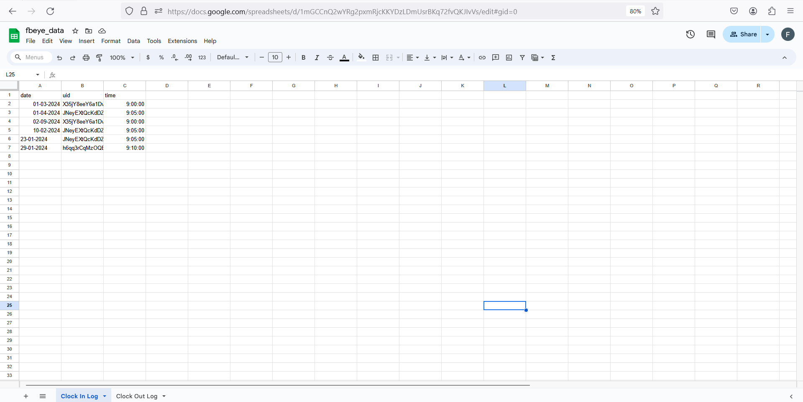
Week 12:
Project development
Previously, the firebase database was commented to be unorganised, therefore I worked with my team to
update the database such that it is easier to understand.
We brainstormed and thought about how to rearrange the database and name them appropriately, allowing the
retrieval of data from the backend to be more seamless
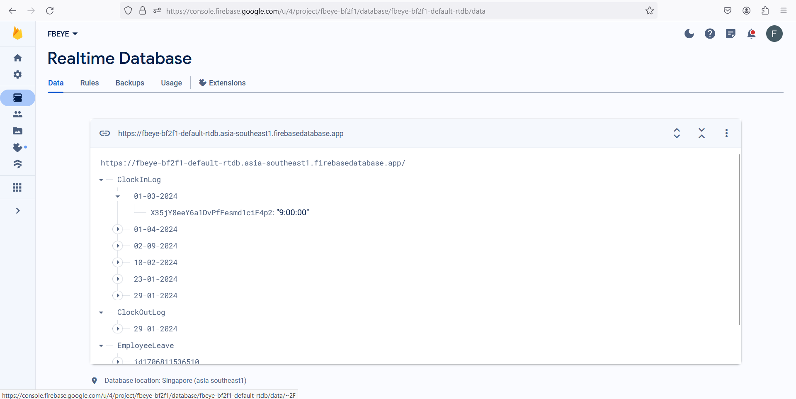
Week 5:
Project development
I worked with my team for 3 days at the BYTES hackathon, where we came together and presented our pitch to the long awaited sponsors!
In this week, I added Firebase API queries to the python programme, allowing it to upload and receive data from the Firebase
database. OpenPyXL was also added which creates an excel sheet based on the database entries.
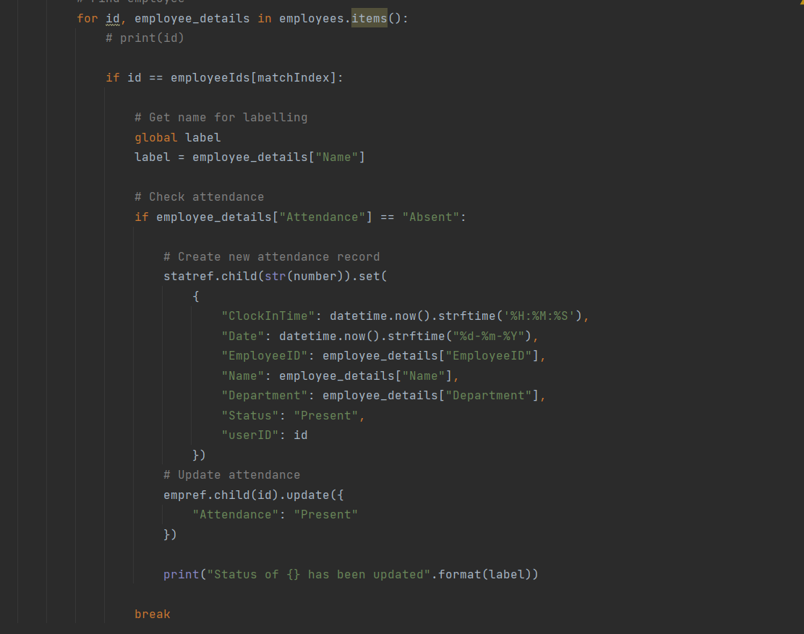
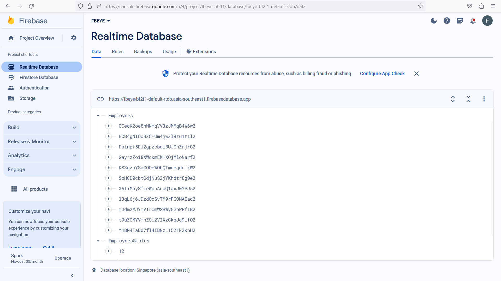
OAL Reflection
As my team was busy debugging and testing the applications, we did not have a concrete presentation flow, which made our pitch seem
messy and unorganised.
As we have never met the sponsors prior to this day, our solution was slightly off-topic and not very well received.
This encounter really stresses the importance of having transparency in communication, and clearing of any misconceptions
before approaching a project. Many assumptions were made on our team's side, which caused us to overlook the crux of the problem
and end up releasing a solution that does not completely cover the problem statement.
Despite that, as our product was the most completed, we won a prize.
Week 4:
Project development
Updated the python programme, added ultralytics' YOLO (yolov8n), a pre-trained model that can identify a person from a video.
YOLO can differentiate between a person and a mobile phone. However, I am still in the midst of integrating the model with the
current face recognition library. I have an error where the programme is unable to filter multiple faces.
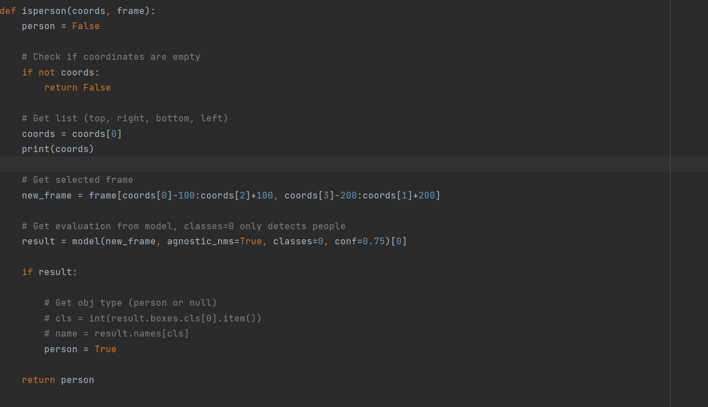
OAL Reflection
I learnt more about UI/UX design, such as utilising the 60-30-10 rule, where 60% of colour is used for the UI i.e., the navigation bar,
30% for the main page (background) and 10% used as an accent.
Using apps such as Figma and Adobe XD, you can create a prototype to test designs, and also gather feedback from others
to further improve your design. A UI/UX is best when each function is natural and seamless.
Week 3:
Project development
We have created another Github page for the website which will be using ASP .Net Core MVC.
The python programme from week 1 has been updated and an encoder has been coded. The encoder converts images from BGR to RGB
and stores them into a file, which is then used to verify known faces.
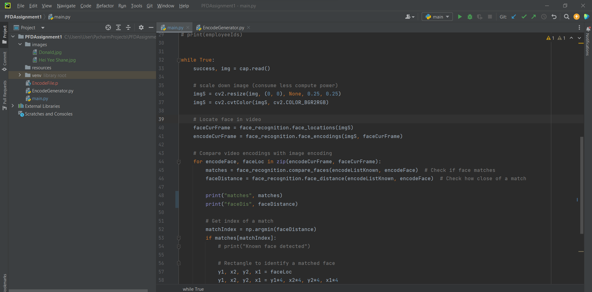
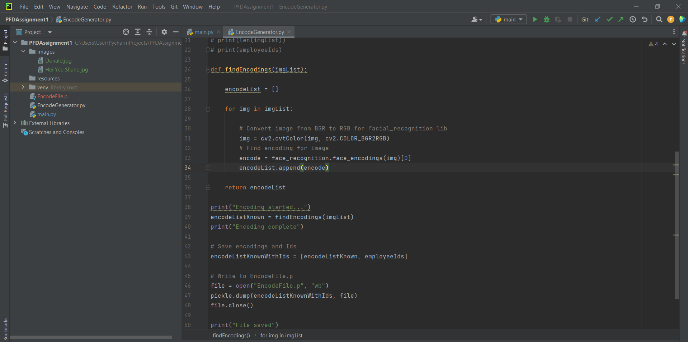
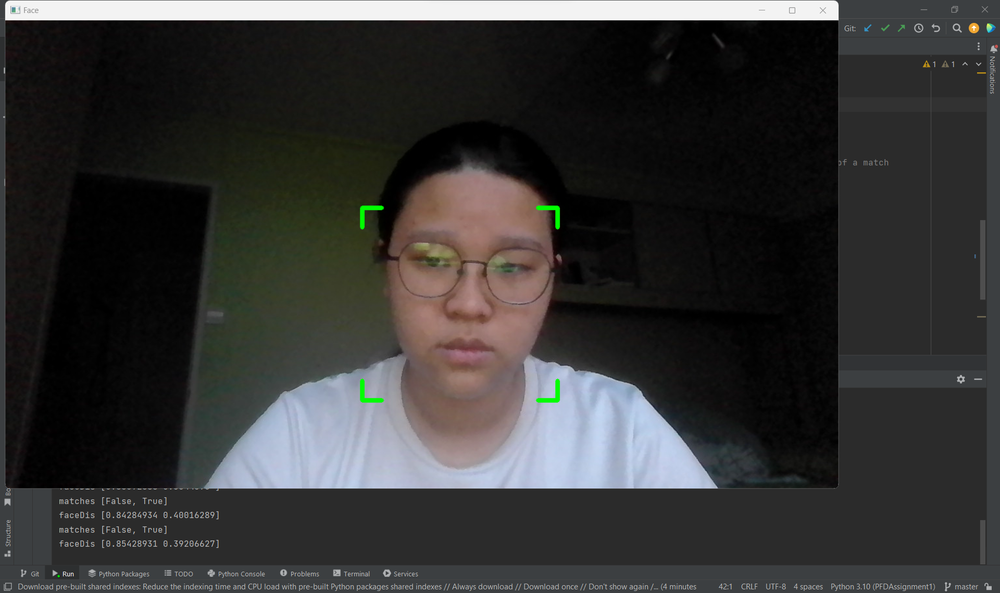
OAL Reflection
From what I understand, the scrum framework and agile methodology has heavy emphasis on transparency, and therefore
requires both parties, the developers and the stakeholders, to communicate and set the deliverables of a project.
As my class has yet to meet our sponsors, using the scrum framework and agile methodology is not very
effective as we do not communicate with them. This leaves us with no choice but to follow the waterfall methodology
and try our best to create a prototype before meeting our sponsors, and slowly improve our solution from there.
Week 2:
Project development
My group has come up with a name for our solution: FBEye.
It is a pun with the intention of comparing our software to the FBI.
Similar to the FBI, our solution monitors people who attempt to enter the company building, so we thought it was a suitable name.
We have created an Inception Deck slide to introduce our pitch to our sponsors, AIDC Pte Ltd.
As I thought the Inception Deck slides template was too plain, I collaborated with my team to use a different slides template.
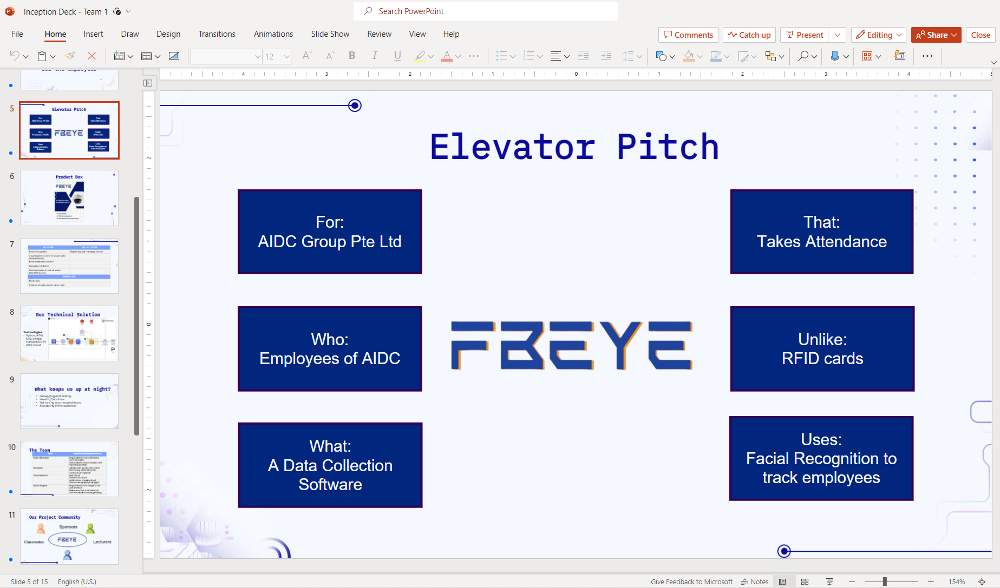
OAL Reflection
I think it is very important to understand our stakeholders and their positions before pitching an idea to them.
This allows for the business interaction to go smoothly and also allows me to better communicate with the sponsor.
Therefore, I decided to put together a list of items, as well as a vague description of AIDC Pte Ltd,
to better understand the whole scope of the project, as well as get familiar with the sponsor to better cater to them
during the pitch.
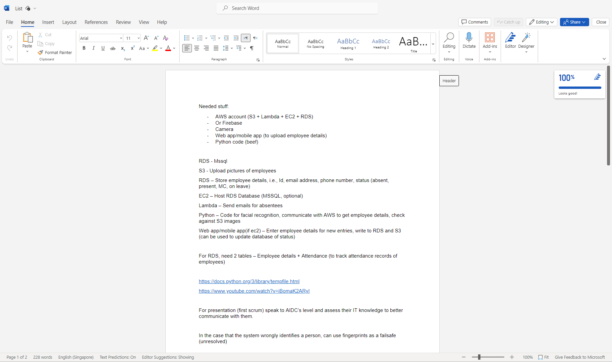
Week 1: Introduction to PFD
Project development
Currently, my group is working towards creating a facial recognition software to aid AIDC in collecting data,
allowing employees' attendance to be recorded without much hassle.
We are in the early phases of development and are still deciding on whether we want to implement Cloud Architecture into our solution.
Currently, we have created a Github repository and are coding in Python (cv2) to create our software.
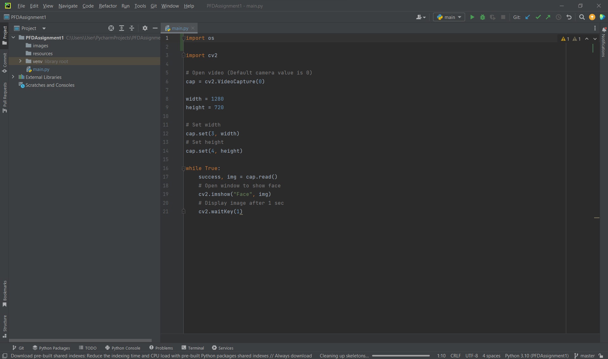
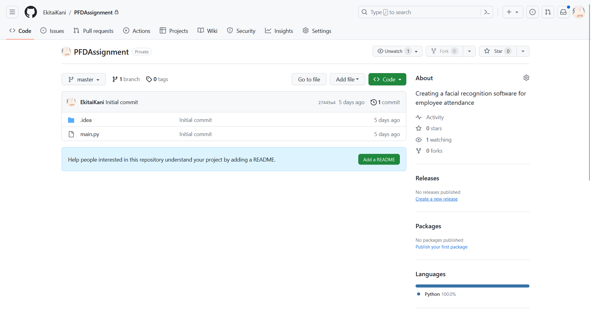
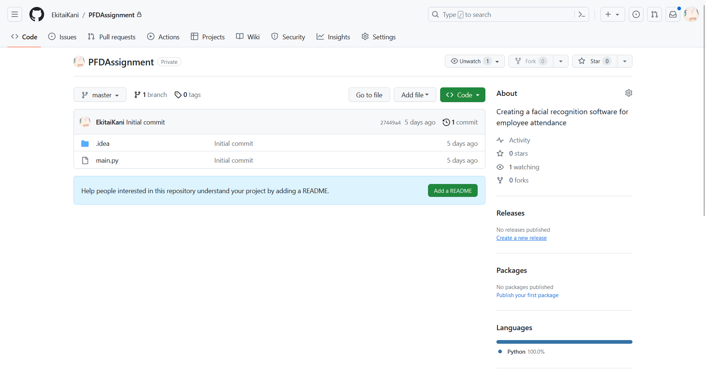
OAL Reflection
Was supposed to finish the IBM Enterprise Design Thinking for Practitioner Courseware,
but I have actually done it during the holidays. IBM liked and commented on my LinkedIn celebration post!
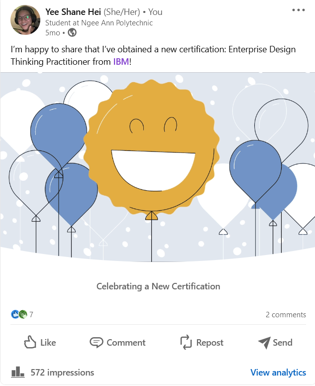